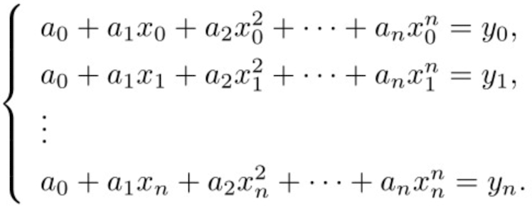
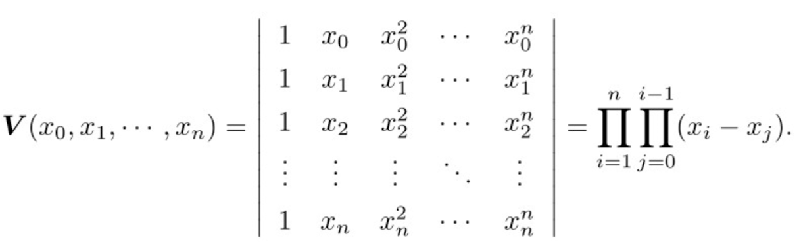

<!DOCTYPE html>

<html>
<head>
<meta charset="utf-8"/>
<meta content="width=device-width, initial-scale=1.0" name="viewport"/>
<meta content="ie=edge" http-equiv="X-UA-Compatible"/>
<title>数值分析</title>
<style>
        * {
            margin: 0;
            padding: 0;
        }

        #mindmap {
            display: block;
            width: 100vw;
            height: 100vh;
        }
    </style>
<link href="https://cdn.jsdelivr.net/npm/markmap-toolbar@0.15.4/dist/style.css" rel="stylesheet"/>
<link href="https://cdn.jsdelivr.net/npm/katex@0.16.8/dist/katex.min.css" rel="stylesheet"/>
<link href="https://cdn.jsdelivr.net/npm/@highlightjs/cdn-assets@11.8.0/styles/default.min.css" rel="stylesheet"/>
</head>
<body>
<svg id="mindmap"></svg>
<script src="https://cdn.jsdelivr.net/npm/d3@7.8.5/dist/d3.min.js"></script>
<script src="https://cdn.jsdelivr.net/npm/markmap-view@0.15.4/dist/browser/index.js"></script>
<script src="https://cdn.jsdelivr.net/npm/markmap-toolbar@0.15.4/dist/index.js"></script>
<script>(e => {
    window.WebFontConfig = {
        custom: {families: ["KaTeX_AMS", "KaTeX_Caligraphic:n4,n7", "KaTeX_Fraktur:n4,n7", "KaTeX_Main:n4,n7,i4,i7", "KaTeX_Math:i4,i7", "KaTeX_Script", "KaTeX_SansSerif:n4,n7,i4", "KaTeX_Size1", "KaTeX_Size2", "KaTeX_Size3", "KaTeX_Size4", "KaTeX_Typewriter"]},
        active: () => {
            e().refreshHook.call()
        }
    }
})(() => window.markmap)</script>
<script defer="" src="https://cdn.jsdelivr.net/npm/webfontloader@1.6.28/webfontloader.js"></script>
<script>(() => {
    setTimeout(() => {
        const {markmap: M, mm: ge} = window, me = new M.Toolbar;
        me.attach(ge);
        const fe = me.render();
        fe.setAttribute("style", "position:absolute;bottom:20px;right:20px"), document.body.append(fe)
    })
})()</script>
<script>
    ((F, I, R, H) => {
        const X = F();
        window.mm = X.Markmap.create("svg#mindmap", (I || X.deriveOptions)(H), R)
    })(() => window.markmap, null, {'content': "<div style='display: flex; justify-content: center; align-items: center;'></div> <div style='padding-bottom: 5px; text-align: center;'><font color='teal'><h3>数值分析</h3></font></div>", 'depth': 1, 'children': [{'content': '<h4>已知函数在一些点上的值，寻求它的分析表达式</h4>', 'depth': 2, 'children': [{'content': '<b>问题描述</b>', 'depth': 3, 'children': [{'content': '<div style=\'padding-bottom: 10px; text-align: center;\'><table border="5" cellpadding="1" cellspacing="0" id="Table" style="border-collapse: collapse; border-color: lightgray;"> <tbody>  <tr>   <td style="max-width: 300px; text-align: center; border: 1px dashed lightgray">    <label style="font-family: Lucida Grande; font-size: medium; font-weight: bolder; color: slategray">     <pre>   x   </pre>    </label>   </td>   <td style="max-width: 300px; text-align: center; border: 1px dashed lightgray">    <label style="font-family: Lucida Grande; font-size: medium; font-weight: bolder; color: slategray">     <pre>   x<sub>1</sub>   </pre>    </label>   </td>   <td style="max-width: 300px; text-align: center; border: 1px dashed lightgray">    <label style="font-family: Lucida Grande; font-size: medium; font-weight: bolder; color: slategray">     <pre>   x<sub>2</sub>   </pre>    </label>   </td>   <td style="max-width: 300px; text-align: center; border: 1px dashed lightgray">    <label style="font-family: Lucida Grande; font-size: medium; font-weight: bolder; color: slategray">     <pre>   …   </pre>    </label>   </td>   <td style="max-width: 300px; text-align: center; border: 1px dashed lightgray">    <label style="font-family: Lucida Grande; font-size: medium; font-weight: bolder; color: slategray">     <pre>   x<sub>n</sub>   </pre>    </label>   </td>  </tr>  <tr>   <td style="max-width: 300px; text-align: center; border: 1px dashed lightgray">    <label style="font-family: Lucida Grande; font-size: medium; font-weight: bolder; color: slategray">     <pre>   y   </pre>    </label>   </td>   <td style="max-width: 300px; text-align: center; border: 1px dashed lightgray">    <label style="font-family: Lucida Grande; font-size: medium; font-weight: bolder; color: slategray">     <pre>   y<sub>1</sub>   </pre>    </label>   </td>   <td style="max-width: 300px; text-align: center; border: 1px dashed lightgray">    <label style="font-family: Lucida Grande; font-size: medium; font-weight: bolder; color: slategray">     <pre>   y<sub>2</sub>   </pre>    </label>   </td>   <td style="max-width: 300px; text-align: center; border: 1px dashed lightgray">    <label style="font-family: Lucida Grande; font-size: medium; font-weight: bolder; color: slategray">     <pre>   …   </pre>    </label>   </td>   <td style="max-width: 300px; text-align: center; border: 1px dashed lightgray">    <label style="font-family: Lucida Grande; font-size: medium; font-weight: bolder; color: slategray">     <pre>   y<sub>n</sub>   </pre>    </label>   </td>  </tr> </tbody></table></div>', 'depth': 4}, {'content': 'Q1: 是否能找到一个简单且便于计算的公式,<br>利用它可以算出给定区间上任意点的值', 'depth': 4}, {'content': 'Q2: 设给定一个函数 f, f 的表达式非常复杂,<br>计算 f 的值很不经济, 在这种情况下就要寻找另一个函数 p,<br>它既易于求值且又是对 f 的一个合理的逼近', 'depth': 4}, {'content': 'Q3: 假定表中给出的数值带有误差,<br>要寻找一个公式, 使它可以近似地表示这些数据', 'depth': 4}, {'content': 'Q1 —— 插值 <br> Q2 —— 连续函数逼近 <br> Q3 —— 离散函数逼近', 'depth': 4}, {'content': '三个问题都能用简单的函数 p 来表示或逼近给定的数值表或函数 f<br>p 的类型可以是多项式、样条函数、三角函数、有理函数等', 'depth': 4}]}, {'content': '<b>插值</b>', 'depth': 3, 'children': [{'content': '完全通过已知数据点构建一个函数, 使该函数在这些点上的值与原始数据完全一致', 'depth': 4}, {'content': '(1) 多项式插值', 'depth': 4, 'children': [{'content': '多项式插值的唯一性', 'depth': 5, 'children': [{'content': "", 'depth': 6}, {'content': "", 'depth': 6}, {'content': '因为变量互不相同, 所以行列式不为零, 根据解线性方程组的克拉默(Cramer)法则,<br>方程组的解存在且唯一, 从而p(x)被唯一确定, 这就证明了n次代数插值问题的解是存在且唯一的', 'depth': 6}]}, {'content': '拉格朗日插值', 'depth': 5}, {'content': '牛顿插值', 'depth': 5}, {'content': '埃尔米特插值', 'depth': 5}]}, {'content': '(2) 样条插值', 'depth': 4}, {'content': '(3) 三角插值', 'depth': 4}, {'content': '(4) 有理插值', 'depth': 4}, {'content': '问题', 'depth': 4, 'children': [{'content': '问题', 'depth': 5}]}]}, {'content': '<b>拟合</b>', 'depth': 3, 'children': [{'content': '构建一个函数, 以最佳方式近似', 'depth': 4}, {'content': '(1) 连续函数逼近', 'depth': 4, 'children': [{'content': '度量逼近的标准', 'depth': 5, 'children': [{'content': '一致逼近', 'depth': 6}, {'content': '平方逼近', 'depth': 6}]}]}, {'content': '(2) 离散函数逼近', 'depth': 4}]}]}, {'content': '<h4>References</h4>', 'depth': 2, 'children': [{'content': '《现代数值计算（第 2 版）》', 'depth': 3}, {'content': "<a href='https://zhuanlan.zhihu.com/p/131493410'>多项式插值（1）</a>", 'depth': 3}, {'content': "<a href='https://zhuanlan.zhihu.com/p/132400100'>多项式插值（2）</a>", 'depth': 3}, {'content': "<a href='https://zhuanlan.zhihu.com/p/138011852'>函数逼近（1）</a>", 'depth': 3}, {'content': "<a href='https://zhuanlan.zhihu.com/p/141143281'>函数逼近（2）</a>", 'depth': 3}]}]},
        {"colorFreezeLevel": 2, "initialExpandLevel": 3}
    )
</script>
</body>
</html>